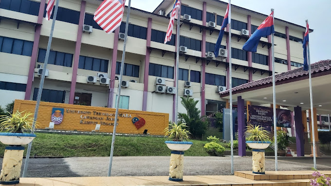

| 1 |

|

Universiti Teknologi MARA (UiTM) Johor, Kampus Segamat
-
My academic journey took an exciting turn when I enrolled at Universiti Teknologi MARA (UiTM) Johor, Kampus Segamat.
-
Located at Jalan Universiti Off, KM 12, Jalan Muar, Kemajuan Tanah Jementah Batu Sebelas, 85000 Segamat, Johor Darul Ta'zim.
-
Pursued a Diploma in Information Management, aligning perfectly with my interests and aspirations.
-
Enjoyed enriching studies, warm friendships, and a serene environment in Segamat.
-
Aimed to achieve excellent results, dreaming of the Vice-Chancellor's Award or consistently making the Dean's List.
-
Supported by friends and lecturers who keep me motivated and inspired every step of the way.
|
| 2 |
|
|